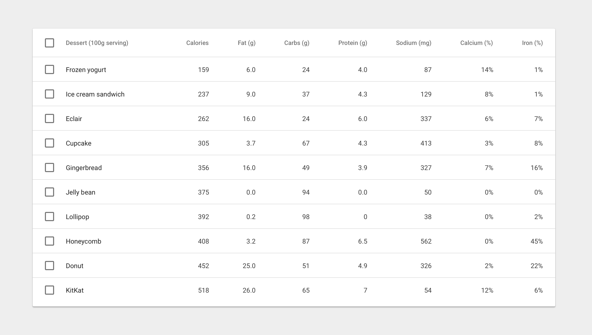

데이터 테이블은 최상단에 열 이름을 나열한 헤더 행(Header Row)이 들어 있으며, 데이터를 위한 행이 그 뒤를 따릅니다.
사용자가 데이터를 선택하거나 조작할 필요가 있다면, 체크박스가 각 행에 동반되어야 합니다.
데이터 집합은 다음을 포함할 것입니다:
- 셋 또는 그 이상의 데이터 열
- 그에 상응하는 시각화
- 범위에서 데이터를 질의하고 조작하는 사용자를 위한 능력

기본적인 데이터 테이블
테이블 내용물
13sp Roboto Regular
87% 검정
열 헤더
12sp Roboto Medium
54% 검정
텍스트 정렬
숫자 열은 우측 정렬
텍스트 열은 왼쪽 정렬